<!DOCTYPE html>
<html lang="en">
    <head>
        <title>Tournesol Travel</title>
        <meta charshet="utf-8" />
        <link rel="stylesheet" href="style.css">
        <link href="https://fonts.googleapis.com/css2?family=Bungee+Shade&display=swap" rel="stylesheet">
        <link href="https://fonts.googleapis.com/css2?family=Darker+Grotesque:wght@300&display=swap" rel="stylesheet">
        <link href="https://fonts.googleapis.com/css2?family=Quicksand:wght@300&display=swap" rel="stylesheet">
    </head>
    <body>
        <section>
            <header>
                <div class="hero">
                    <div class="navbar">
                        
                        <ul>
                            <li><a href="#">TRANG CHỦ</a></li>
                            <li><a href="#">TOUR TRONG NƯỚC</a></li>
                            <li><a href="#">TOUR NƯỚC NGOÀI</a></li>
                            <li><a href="#">DỊCH VỤ DU LỊCH</a></li>
                            <li><a href="#">LIÊN HỆ</a></li>
                        </ul>
                    </div>
                    <div class="place">
                        <h3 class="slogan">"Hành trình đi tìm pha lê giấu trong cát"</h3>
                        <h1 class="tour">NINH THUẬN</h1>
                    </div>
                    <div class="bienca">
                        
                    </div>
                </div>
            </header> 
        </section>
        <section>
            <div class="tt">
                <p> <b>PHƯƠNG TIỆN:</b> Đi về bằng xe ô tô</p>
                <p> <b>GIÁ VÉ:</b> 2.999.000VNĐ</p>
                <p> <b>ĐIỂM KHỞI HÀNH:</b> Thành phố Hồ Chí Minh</p>
                <p> <b>ĐIỂM ĐẾN:</b> Tỉnh Ninh Thuận</p>
                <p> <b>THỜI GIAN HÀNH TRÌNH:</b> 3 ngày 2 đêm</p>
                <p> <b>NGÀY KHỞI HÀNH:</b> Thứ 7 ngày 09/10/2021</p><br>
                <div class="gt">
                    <p> <b>GIỚI THIỆU</b> </p>
                    <h1 class="nt">   Người ta nói, Ninh Thuận là vùng đất ‘nắng như rang, gió như phan’. Nhưng ít ai biết rằng, nơi đây mang vẻ đẹp hút 
                    hồn với những điểm đến trứ danh như Tháp Chăm Po Klong Garai, làng gốm Bàu Trúc, vịnh Vĩnh Hy...Hành trình 
                    Ninh Thuận 3 ngày 2 đêm với bao trải nghiệm thú vị, khám phá những bãi biển nổi tiếng như Vĩnh Hy, Ninh Chữ, và 
                    tận hưởng khung cảnh thiên nhiên độc nhất vô nhị...</h1>
                </div>
                <div class="db">
                    <p> <b>MỘT SỐ ĐIỂM ĐẶC BIỆT TRONG CHUYẾN ĐI</b> </p>
                    <h1 class="nt">- Khám phá khu du lịch dã ngoại Tanyoli được mệnh danh là vùng đất 300 ngày nắng.<br>
                    - Đón bình minh trên đồng cừu An Hòa, chiêm ngưỡng cảnh đàn cừu ra đồng rất đáng yêu và ngộ nghĩnh.<br>
                    - Lạc vào xứ sở cổ tích tại Hang Rái, khám phá kiến trúc độc đáo của những hang động, vốn được tạo nên từ nhiều hòn đá xếp chồng lên nhau.<br>
                    - Khám phá tháp Pô Klông Garai, biểu tượng văn hóa của đồng bào Chăm, nghe những truyền thuyết xung quanh vị thần tài ba này.<br>
                    - Băng qua tiểu sa mạc cát Mũi Dinh trên xe điện. Hành trình mang đầy tính thách thức, mạo hiểm với những cung đường bụi mù cát, nhưng đảm bảo rất thú vị và hấp dẫn.<br></h1>
                    <div class="hh">
                    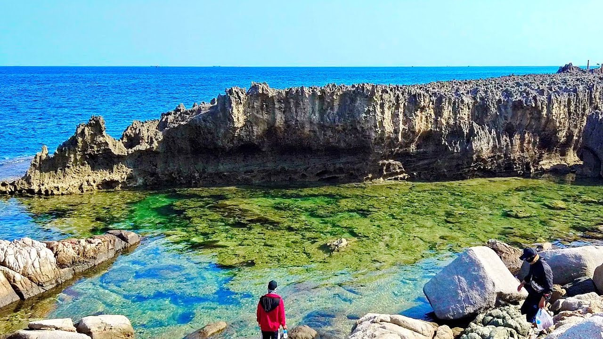
                    </div>
                </div>
                <div class="gt">
                    <p> <b>LỊCH TRÌNH</b> </p>
                    <h1 class="dm"><p> <b><u>NGÀY 1: HỒ CHÍ MINH - NINH THUẬN - KHU DU LỊCH TANYOLI (Ăn trưa, tối)</u></b> </p></h1>
                    <h1 class="ny"><b><p><big>05:00</big></b> - Xe và HDV Tournesol Travel sẽ đón quý khách tại điểm hẹn khởi hành đi Ninh Thuận. Địa chỉ: 55 Công Xã Paris, Bến Nghé, Quận 1, Thành phố Hồ Chí Minh. (Quý khách ăn sáng ở nhà)<br>
                        <b><p><br><big>11:00</big></b> - Dùng bữa trưa tại Ninh Thuận.<br></p>
                        <b><p><br><big>14:00</big></b> - Xe và HDV đưa đoàn tham quan Khu du lịch dã ngoại, giải trí Tanyoli, tọa lạc tại Mũi Dinh - vùng đất hội tụ những cồn cát thiên nhiên tuyệt đẹp, những bãi biển trong vắt hoang sơ và những đỉnh núi Trường Sơn trập trùng hùng vĩ.</p><br>
                        <div class="ha">
                            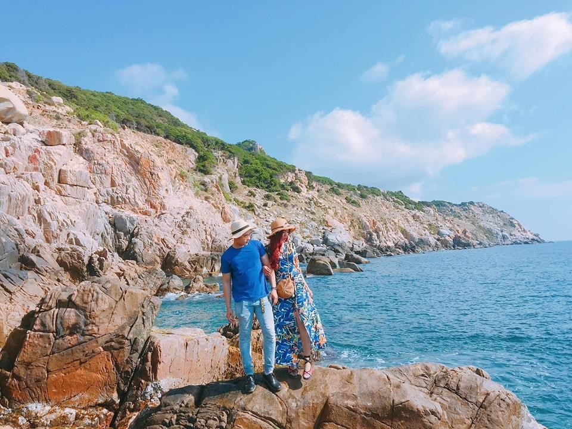
                        </div>
                        <b><p><br><big>17:30</big></b> - Xe đưa quý khách về nhà hàng ăn tối.</p><br>
                        <b><br><big>19:00</big></b> - Sau bữa tối, lái xe và HDV đưa Qúy khách về nhận phòng khách sạn gần bãi biển Bình Sơn – Ninh Chữ.</p><br>
                        Quý khách tự do khám phá các món ăn đặc trưng của Ninh Thuận về đêm (chi phí tự túc).<br></p>
                    </h1>
                    <h1 class="dm"><p> <b><u>NGÀY 2: ĐỒNG CỪU AN HÒA - HANG RÁI – VỊNH VĨNH HY – VƯỜN NHO THÁI AN – ĐỒI CÁT NAM CƯƠNG (Ăn sáng, trưa, tối)</u></b> </p></h1>
                    <h1 class="ny"><b><p><big>07:00</big></b> - Quý khách ăn sáng tại nhà hàng trong khách sạn.<br></p>
                        <b><br><p><big>08:30</big></b> - Sau khi ăn sáng, đoàn khởi hành tới tham quan: <br>
                        <br>- Đồng cừu An Hòa <b>nơi Đen Vâu quay MV TRỐN TÌM</b>. Quý khách sẽ đón bình minh trên đồng cừu, chiêm ngưỡng cảnh đàn cừu ra đồng rất đáng yêu, ngộ nghĩnh. <br>
                            <div class="ha">
                                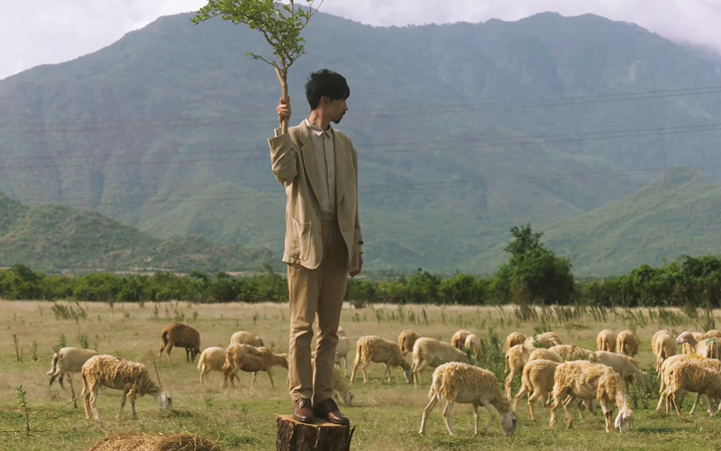
                                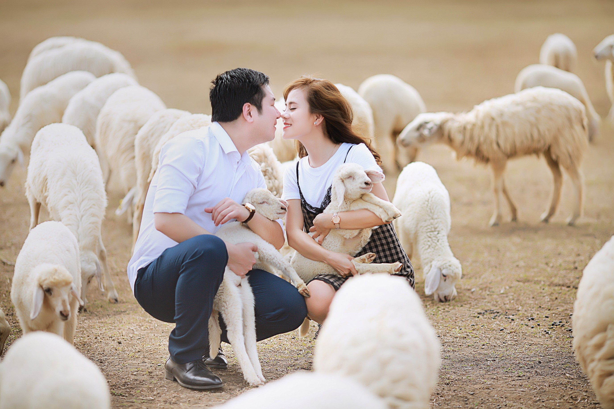
                                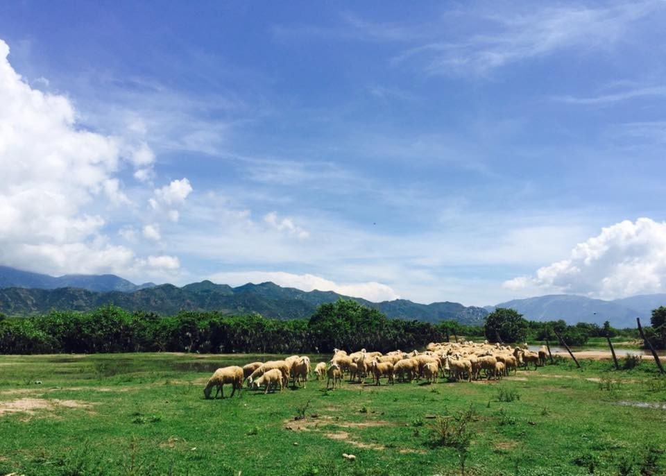
                            </div>
                        - Tham quan Hang Rái - là một trong những điểm nhấn khi du lịch vịnh Vĩnh Hy, Hang Rái mang lại cảm giác tuyệt hảo cho du khách khi được lạc vào xứ sở của câu chuyện cổ tích bởi vẻ đẹp gần như hoàn hảo. Từ những hòn đá nhiều hình thù xếp chồng lên nhau tạo ra vô số hang động lớn nhỏ đẹp mắt.<br>
                        <br>- Tới làng chài Vĩnh Hy, tàu đáy kính sẽ đưa quý khách tới thăm những rạn san hô nhiều màu sắc, những loài cá biển vô số sắc màu xanh óng ánh hoặc đỏ, vàng….Tại vịnh Vĩnh Hy, quý khách có thể lựa chọn chương trình lặn biển ngắm san hô cũng rất hấp dẫn.</p><br>
                            <div class="ha">
                                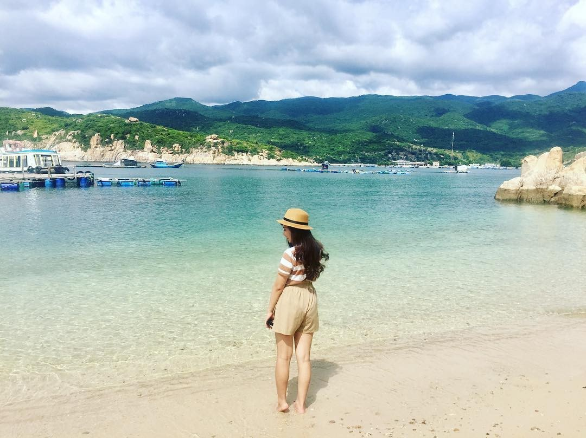
                            </div>
                        <b><big>11:00</big></b> - Ăn trưa hải sản tại Nhà Bè. Cùng thưởng thức những món hải sản tươi ngon nhất.<br>
                        <b><br><big>14:00</big></b> - Quay về thành phố, trên đường ghé thăm: <br>
                        <br>- Vườn nho Thái An. Quý khách sẽ thích thú khi được tận mắt chứng kiến những giàn nho trĩu quả, rợp mát, tự do chụp ảnh, thưởng thức nho ngay tại giàn. Quý khách có thể mua nho tươi về làm quà.<br>
                        <div class="ha">
                            
                        </div>
                        - Thăm đồi cát Nam Cương - là một trong những đồi cát đẹp nhất, hoang sơ nhất tại Ninh Thuận. Đến đây quý chắc chắn sẽ có những bức ảnh tuyệt đẹp, mang lại cảm giác không khác gì quý khách đang đi du lịch tại những sa mạc ở Châu Phi…<br>
                        <div class="ha">
                            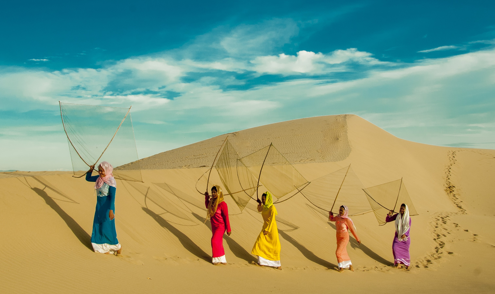
                        </div>
                        <b><big>18:00</big></b> - Ăn tối tại nhà hàng với thịt cừu, đặc sản của vùng đất Phan Rang.<br>
                        <p><br><b><big>19:30</big></b> - Sau bữa tối, đoàn quay về khách sạn ở TP Phan Rang.<br></p>
                    </h1>
                    <h1 class="dm"><p> <b><u>NGÀY 3: KHÁM PHÁ NINH THUẬN (Ăn sáng, trưa)</u></b> </p></h1>
                    <h1 class="ny"><b><p><big>07:00</big></b> - Quý khách ăn sáng tại nhà hàng trong khách sạn.<br></p>
                        <b><br><p><big>08:30</big></b> - Sau khi ăn sáng, đoàn tiếp tục cuộc hành trình tới thăm quan: <br>
                        <br>- Tháp Pô Klông Garai, biểu tượng văn hóa của đồng bào Chăm, nghe những truyền thuyết xung quanh vị thần tài ba này. Quần thể tháp nằm trọn vẹn trên ngọn đồi Trầu, cụm tháp được xây dựng từ thế kỷ XII để thờ vị thần Pô Klông Garai, tương tryền người có công phát triển hệ thống thủy lợi ở xứ Panduranga xưa kia. Tháp là nơi diễn ra lễ hội Ka tê chính của người Chăm. Hiện nay, cụm tháp còn nguyên vẹn về cả công trình kiến trúc lẫn tổ chức thờ phụng cung kính của người Chăm. <br>
                        <div class="ha">
                            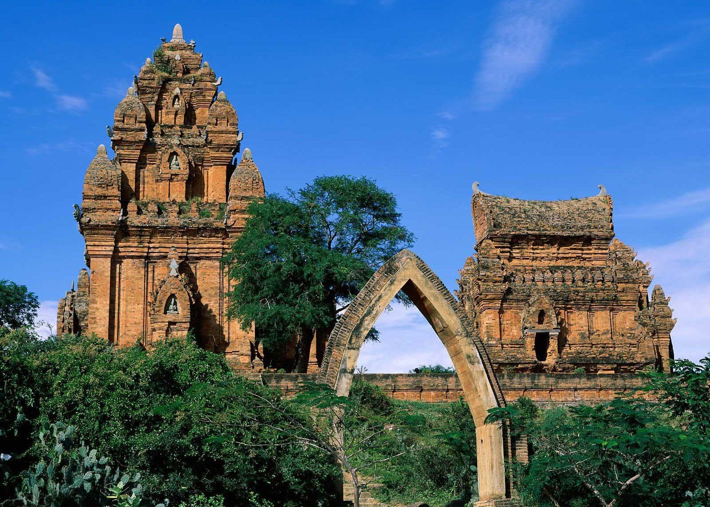
                            
                            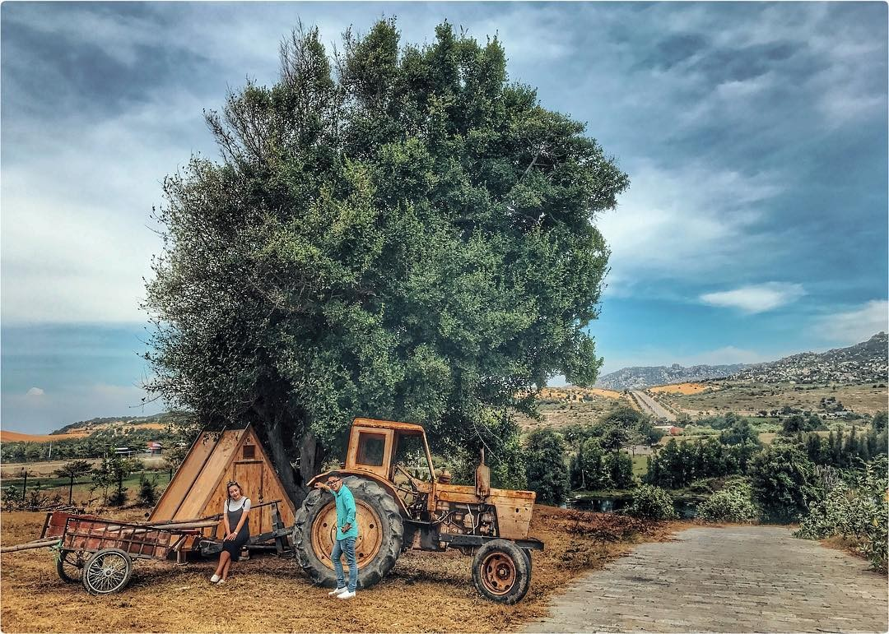
                            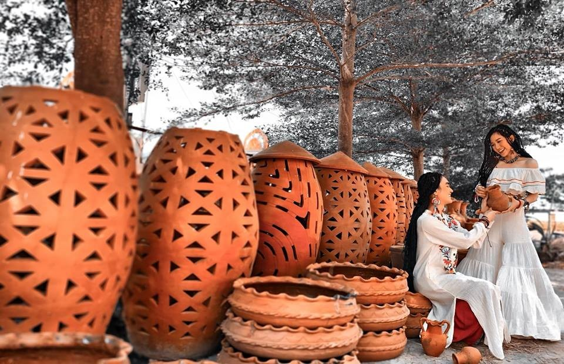
                        </div>
                        - Thăm hai làng nghề nổi tiếng của người Chăm là Làng gốm Bàu Trúc và làng dệt Mỹ Nghiệp. Đến đây quý khách sẽ được chứng kiến tận mắt các nghệ nhân dệt những tấm thổ cẩm hết sức công phu và khéo léo cũng như tạo ra những sản phẩm gốm bằng phương pháp thủ công hết sức mộc mạc.<br>
                        <div class="ha">
                            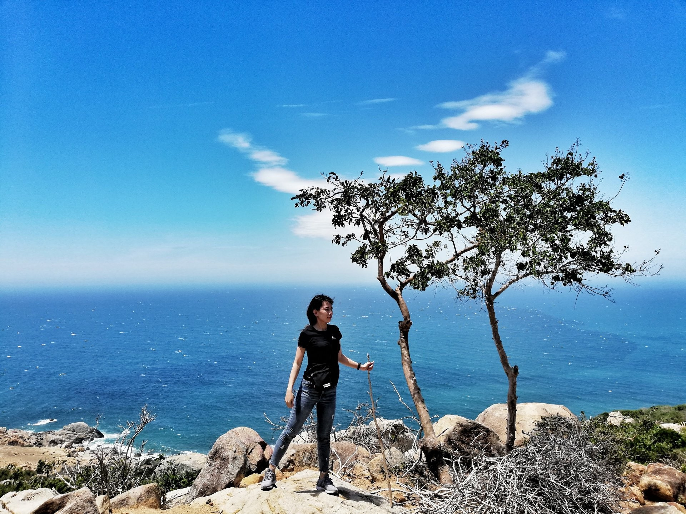
                            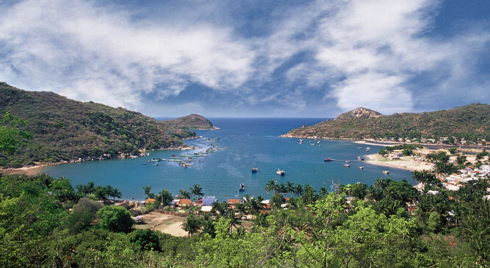
                            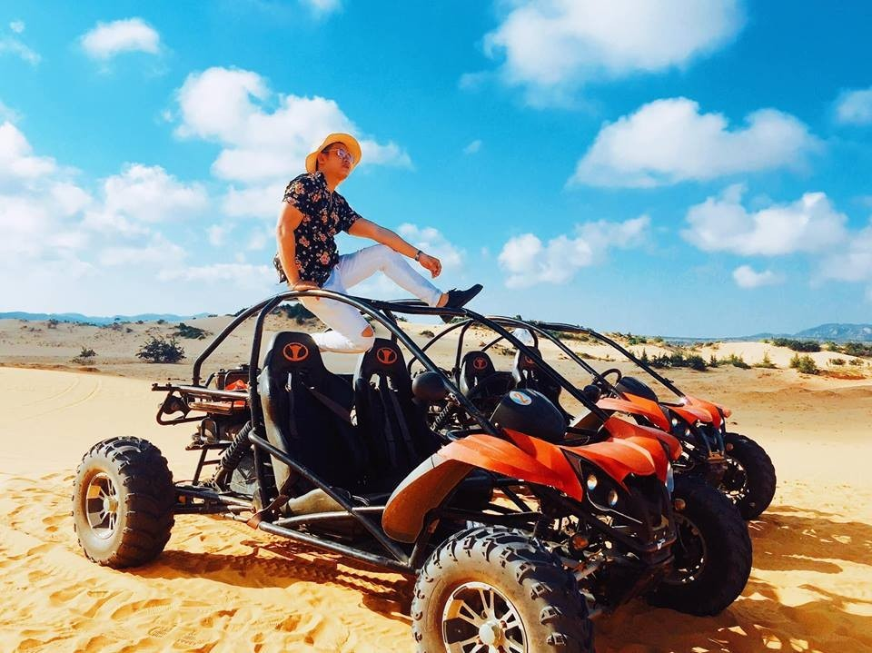
                        </div>
                        <b><big>11:00</big></b> - Ăn trưa tại nhà hàng địa phương.<br>
                        <b><br><big>14:00</big></b> -  Đoàn khởi hành quay về Sài Gòn thân yêu. <br>
                        <br><b>Đoàn về đến TP. HCM, kết thúc chương trình tham quan cực kỳ đặc sắc. HDV Tournesol Travel chia tay và hẹn gặp lại quý khách trên những hành trình thú vị khác của công ty.</b><br>
                <div class="k">
                    <p> <b>BAO GỒM VÀ ĐIỀU KHOẢN</b> </p>
                    <h1 class="v"><p> <b><u>GIÁ TOUR BAO GỒM:</u></b> </p></h1>
                    <p><h1 class="nu">- Xe tham quan theo chương trình.<br>
                    - Khách sạn theo tiêu chuẩn 3 sao: 2 khách/1 phòng, lẻ nam nữ ghép 3.<br>
                    - Vé tham quan các điểm theo chương trình.<br>
                    - Tàu đáy kính ngắm san hô theo chương trình tham quan Vịnh Vĩnh Hy.<br>
                    - Xe đi đồi cát chuyên biệt.<br>
                    - Các bữa ăn theo chương trình (3 bữa phụ, 4 bữa chính: tiêu chuẩn 120,000 vnd/ khách + 1 bữa hải sản trên bè (200.000 vnd/khách).<br>
                    - Hướng dẫn viên tiếng Việt kinh nghiệm, nhiệt tình.<br>
                    - Bảo hiểm du lịch với mức bồi thường 20.000.000đ/vụ.<br>
                    - Nước suối 1 chai 500ml/khách/ngày.<br></p>
                    </h1>
                    <h1 class="v"><p> <b><u>GIÁ TOUR KHÔNG BAO GỒM:</u></b> </p></h1>
                    <p><h1 class="nu">- Thuế VAT 10%.<br>
                    - Chi phí cá nhân, giặt ủi, điện thoại, minibar, phụ phí phòng đơn, đồ uống trong các bữa ăn.<br>
                    - Các chi phí khác ngoài chương trình tour.<br>
                    - Tiền tip cho lái xe và HDV địa phương.<br>
                    - Phụ Thu phòng đơn: 800.000/khách.<br></p>
                    </h1>
                    <h1 class="v"><p> <b><u>LƯU Ý:</u></b> </p></h1>
                    <p><h1 class="nu">Giá và hành trình có thể thay đổi theo từng thời điểm cụ thể, Quý khách vui lòng liên hệ để cập nhật giá và hành trình trước khi đặt tour.<br>
                    - Giờ bay có thể thay đổi theo giờ bay của Hãng hàng không.<br>
                    - Về tính chất đoàn ghép, tour không đủ khách khởi hành sẽ hủy. Đơn vị lữ hành sẽ có nhiệm vụ báo trước tới khách 15 ngày và thỏa thuận với khách về ngày khởi hành mới. Mọi chi phí phát sinh hai bên cùng thỏa thuận.<br>
                    - Đối với các khách hàng đi riêng  lẻ (lẻ 01 người) thì sẽ chịu phí phòng đơn. Khi có khách lẻ khác cùng đăng ký ghép vào thì chúng tôi sẽ trả lại phụ phí phòng đơn cho quý khách.<br>
                    - Trẻ em từ 0-5 tuổi: Miễn phí tour, ăn ngủ chung với bố mẹ. (Hai người lớn chỉ được kèm 01 trẻ em. Từ trẻ em thứ 2 phụ thu 50% người lớn). Trẻ em từ 1 tuổi trở lên đóng 700.000VND vé tàu cao tốc.<br>
                    - Trẻ em từ 5-11 tuổi: Phụ thu 75% tour. Hai người lớn chỉ được kèm 01 suất trẻ em từ 5-11 tuổi. Từ bé thứ 2, ba mẹ nên mua thêm 01 suất giường đơn.<br>
                    - Trẻ trên 11 tuổi: Tính như người lớn.<br>
                    - Khách nước ngoài phụ thu 10USD/người/ngày, khi đi mang theo 2 bản photo hộ chiếu và bản gốc để đối chiếu.<br></p>
                    </h1>
                    <h1 class="v"><p> <b><u>ĐIỀU KIỆN HOÀN HỦY:</u></b> </p></h1>
                    <p><h1 class="nu">- Nếu quý khách hủy tour sau khi đăng ký và trước 20 ngày khởi hành: mất phí cọc tour.<br>
                    - Nếu quý khách hủy tour trước 15 ngày khởi hành: phí hủy 50% tiền tour + 100% tiền Vé máy bay.<br>
                    - Nếu quý khách hủy tour trước 07 ngày khởi hành: phí hủy 70% tiền tour + 100% tiền vé máy bay.<br>
                    - Nếu quý khách hủy tour trong vòng 07 ngày trước ngày khởi hành: phí hủy 100% tiền tour + 100% tiền vé máy bay (100% giá trị tour trọn gói).<br>
                    </p>
                    <br><br><br><br><br>
                    </h1>
                </div>
            </div>  
        </section>
    </body>
</html>
